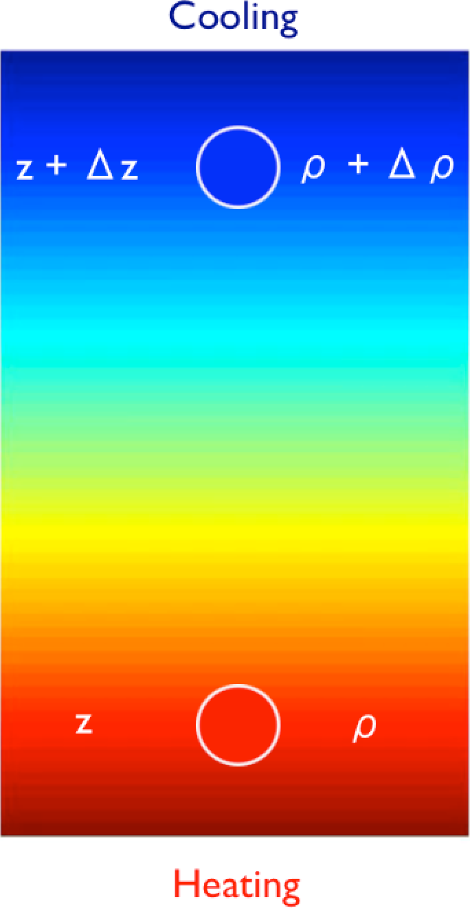
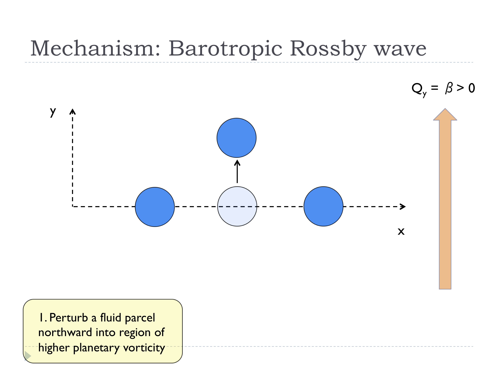
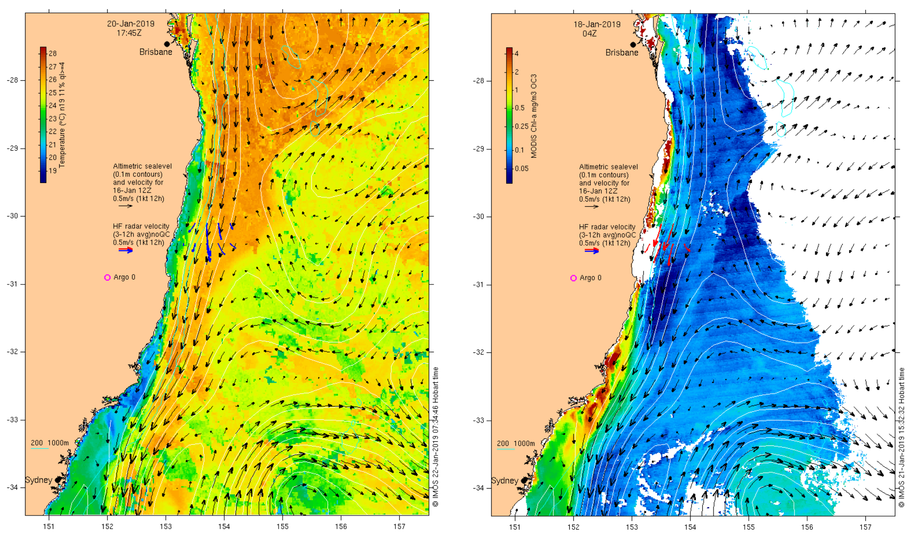

class: center, middle # Topic 5: Ocean circulation MATH3261/5285: Fluids, Oceans, and Climate [{Shane Keating}](https://srkeating.com/), School of Mathematics and Statistics UNSW Sydney, Term 1, 2019 .footnote[Created with [{Remark.js}](http://remarkjs.com/) using [{Markdown}](https://daringfireball.net/projects/markdown/) + [{MathJax}](https://www.mathjax.org/)] --- class: left, middle # 5.1 A brief overview of the ocean circulation > "Look at the crowds of water-gazers there." > Herman Melville, *Moby Dick* --- class: center, middle <iframe width="750" height="420" src="https://www.youtube.com/embed/CCmTY0PKGDs" frameborder="0" allow="accelerometer; autoplay; encrypted-media; gyroscope; picture-in-picture" allowfullscreen></iframe> [{NASA | Perpetual Ocean}](https://youtu.be/CCmTY0PKGDs) --- class: center, middle ## Major surface ocean currents --- class: left, middle ## Baroclinic instability ***Baro*** *(pressure)* + ***cline*** *(slope)* : instability arising from sloped pressure contours > "It is the instability that gives rise to the large-scale and mesoscale motion in the atmopshere and the ocean - it produces atmopsheric weather systems, for example, and so is, perhaps, the form of hydrodynamic instability that most affects the human condition." > G. J. Vallis, *Atmospheric and Oceanic Fluid Dynamics* --- class: left, middle ## Baroclinic instability - generates midlatitude ocean eddies and weather systems - converts gravitational potential energy (stored in sloping density surfaces) into kinetic energy - transports heat poleward modifying climate and global energy budget --- class: center, top ## Convective instability <video preload="auto" width="80%" height="auto" data-setup="{}" loop controls><source src="convection.mp4" type="video/mp4" /></video> - At rest with cold/dense fluid over warm/light fluid - Rest state is in unstable equilibrium --- class: center, top ## Convective instability - At rest with cold/dense fluid over warm/light fluid - Rest state is in unstable equilibrium --- class: center, top ## Convective instability  - Initial potential energy: $PE_1 = g \; \rho \; z + g \; \left( \rho + \Delta \rho \right) \left( z + \Delta z \right)$ --- class: center, top ## Convective instability - Final potential energy: $PE_2 = g \; \left( \rho + \Delta \rho \right) \; z + g \; \rho \; \left( z + \Delta z \right)$ -- - If $\Delta \rho > 0$ then total PE decreases -- - Kinetic energy increases (instability) --- class: left, top ## Available potential energy - For a statified fluid with horizontal density surfaces, any adiabatic rearrangement of water parcels *increases* potential energy - Potential energy cannot be converted into kinetic energy - Define **Available Potential Energy (APE)** as the PE available for conversion to KE - Sloping density surfaces in thermal wind balance have APE! --- class: left, top ## Available potential energy <img src="ape1.png" align="center" width="100%"/> - Rest state with sloping isopycnals: $\overline{\rho}(y,z) = \overline{\rho}_y \; y + \overline{\rho_z} \; z$ - Equilibrium state in thermal wind balance: $f_0 U_z = g/\rho_0 \; \overline{\rho}_y$ --- class: left, top ## Available potential energy - Rest state with sloping isopycnals: $\overline{\rho}(y,z) = \overline{\rho}_y \; y + \overline{\rho_z} \; z$ - Equilibrium state in thermal wind balance: $f_0 U_z = g/\rho_0 \; \overline{\rho}_y$ - Density difference: $\Delta \rho = \overline{\rho}_y \; \Delta y + \overline{\rho}_z \; \Delta z$ --- class: left, top ## Available potential energy - Rest state with sloping isopycnals: $\overline{\rho}(y,z) = \overline{\rho}_y \; y + \overline{\rho_z} \; z$ - Equilibrium state in thermal wind balance: $f_0 U_z = g/\rho_0 \; \overline{\rho}_y$ - Density difference: $\Delta \rho = \overline{\rho}_y \; \Delta y + \overline{\rho}_z \; \Delta z$ --- class: left, top ## Available potential energy - Rest state with sloping isopycnals: $\overline{\rho}(y,z) = \overline{\rho}_y \; y + \overline{\rho_z} \; z$ - Equilibrium state in thermal wind balance: $f_0 U_z = g/\rho_0 \; \overline{\rho}_y$ - Density difference: $\Delta \rho = \overline{\rho}_y \; \Delta y + \overline{\rho}_z \; \Delta z$ - PE difference: $$\Delta PE = - g \; \Delta \rho \; \Delta z = - g \overline{\rho}_z \;\Delta z \; \Delta y \; ( m - m\rho)$$ - If $m < m_\rho$ then total PE decreases and KE increases --- class: left, middle  --- class: left, middle --- class: left, middle --- class: left, middle --- class: left, middle --- class: left, middle --- class: left, middle --- class: left, middle --- class: center, middle <video preload="auto" width="100%" height="auto" data-setup="{}" loop controls><source src="bci.mp4" type="video/mp4" /></video> --- class: left, middle --- class: left, middle # 5.2 The Ekman layer > "On studying the observations of wind and ice-drift taken during the drift of the *Fram*, Fridtjof Nansen found that the drift produced by a given wind did not, according to the general opinion, follow the wind's direction but deviated $20^\circ$-$40^\circ$ to the right." > Vagn Walfrid Ekman, *On the influence of the Earth's rotation on ocean currents* (1905). --- class: center, middle <img src="fram.png" align="center" width="100%"/> --- class: center, middle --- class: center, middle --- class: center, middle --- class: center, middle --- class: center, middle --- class: center, middle --- class: center, middle ## Wind stress (N/m$^2$) --- class: center, middle ## Ekman pumping (m/year) <img src="ekman-pumping.png" align="center" width="100%"/> --- class: center, middle ## Mean sea-surface height (cm) --- class: left, middle # 5.3 The wind-driven circulation > "*Definitive* papers are usually written when a subject is no longer interesting." > Walter Munk (1917-present) --- class: center, middle --- class: center, middle --- class: center, middle --- class: center, middle <img src="Sverdrup-balance4.png" align="center" width="80%"/> --- class: center, middle ## Stommel model (single gyre) --- class: center, middle ## Stommel model (double gyre) --- class: center, middle ## Stommel model (zonal winds) --- class: center, middle ## The East Australian Current  [{Integrated Marine Observing System}](http://oceancurrent.imos.org.au/index.php) --- class: left, middle ## Conclusion > "We can count ourselves fortunate to live in a society and at a time when we are actually paid to explore the universe." > Henry Stommel (1920-1992) --- class: left, middle ## Some links: - [{My research website}](https://srkeating.com/) - [{Mathematics for Planet Earth}](https://mathsforearth.com/) - [{Climate Change Research Centre}](https://www.ccrc.unsw.edu.au/) - [{Honours at UNSW Maths & Stats}](https://www.maths.unsw.edu.au/currentstudents/honours-overview) - [{PhD/MSc at UNSW Maths & Stats}](https://www.maths.unsw.edu.au/futurestudents/postgraduate-research)